All Known Variants in Detail
Game Pak = cartridge = cart
Nintendo’s strategy was supposedly to re-label things that could potentially be negatively connected to the home computer crash from 1984. Home consoles were renamed to Entertainment Systems and game cartridges were now called Game Paks. Nintendo’s strategy was undoubtedly successful. To what degree this had to do with this image campaign and to what degree to the aggressive advertisement is not clear. Overall, Nintendo was very successful since its earlier release of the Famicom (family computer) in Japan and the US and worldwide by the name NES (Nintendo Entertainment System). The Game Boy was the handheld counterpart to the NES – both being 8-bit systems but the Game Boy with lots of cuts.
Parts were produced in Japan and shipped worldwide – except China
Not sure where the labels were produced, though.
Production dates do not necessarily correspond closely with the selling date
Mostly yes. But not always.
Regions aren’t always as sharply defined
It needs to be mentioned that carts with certain distribution regions, could sometimes be found in other regions too. This is likely owing to the fact that revised carts from a region came along before the old stack was sold out locally. It is likely, that these carts were then shipped to broader areas, sometimes even oversees. This is why in Switzerland, where I come from, you could easily buy carts with regions FRG, NOE, EUR, FAH or USA.
Japan
Japanese Variants
| Code | None (Usually JPN) |
|---|---|
| Suspected Region(s) | Japan |
| Suspected Distributor(s) | Nintendo |
| Known variants | TRA(0), TRA, TRA-1 |
| Production dates |
Earliest: 1989 Latest: 1996 |
There are 3 variants in Japan that we know of. Japan carts seem to have been produced continuously and a lot of Sub-variants can be identified.
- DMG-TRA Version 1.0 (Minuet) / DMG-TRA0 on ROM chip (Imprints 05, 09, 20, 23)
- Minuet with the revised artwork (Imprint 22)
- DMG-TRA Version 1.1 / DMG-TRA1 on ROM chip
- Chip variant (AAA-01, AAA-02, AAA-03)
- Blob variant
- DMG-TRA-1 (Tetris Company)
The Japanese versions are special in the sense that they contain legal texts on the label. This Text was changed for the DMG-TRA-1 variant, which was released after establishing the Tetris Company (1996).
TETRIS LICENSED TO BPS
AND SUB-LICENSED TO
Nintendo. © 1989 BPS.
© 1989 Nintendo.
ALL RIGHTS RESERVED.”
Nintendo by The
Tetris Company.
All rights reserved.
Tetris © 1987Elorg.
Tetris Licensed to
Nintendo.
© 1989 Nintendo .
Colloquially reffered to as the Minuet Version, ows this name for its distinct A-Type minuet melody. It is a precursor to the regular Game Boy Tetris that was later released in the only ever revision, also known as Revision A, or v1.0.
Earlier estimates that there were only ever 10,000 units released, have long been debunked. Still, it's a rather rare version of Tetris.
There are quite a few in-game differences from v1.0 to 1.1 which I will list in another chapter.
It is believed that there only exist carts with imprints 05, 09, 20, 22 and 23. Where imprint 22 might be special.
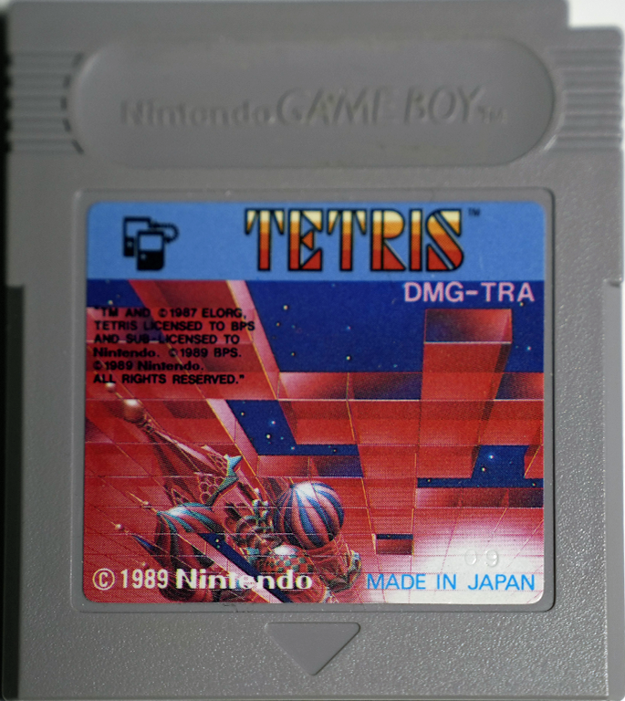
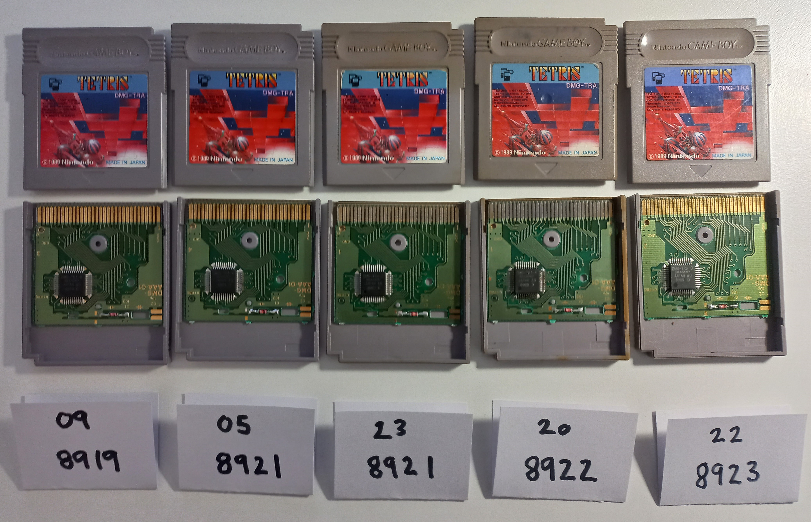
The ROM chip of the minuet has the imprint DMG-TRA-0.
DMG-TRA (Revision A, v1.1)
Japanese carts typically have different artwork than the international ones. For an untrained eye, the Japanese versions 1.1 might look like the 1.0.
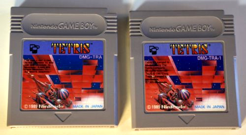
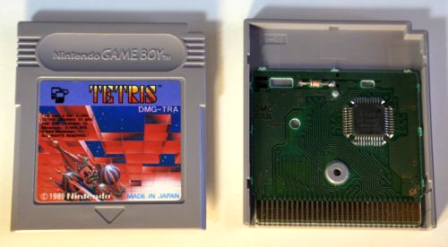
The introduction of globtop PCBs: It is believed that the production volume overwhelmed most manufactured. PCB production had to be outsourced and in some cases globtop ROM chips were used. These are way cheaper than regular ROM chips and are usually an indicator that a game is not original. Tetris is here an exception - globtop PCBs are genuine.
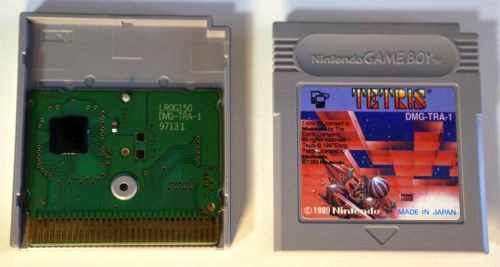
North America and Global
USA Variants
| Code | USA |
|---|---|
| Suspected Region(s) | United States of America, Canada |
| Suspected Distributor(s) | Various distributors |
| Known variants | Early, Late, -1, -2 (Player’s Choice) |
| Production dates |
Earliest: Latest: |
After Japan, the USA was the first country to receive Tetris for the Game Boy. It launched as a packing title with the Game Boy in 1989. The early variant is the only cart that has "Made in Japan" not in one of the strips but on the bottom of the artwork. This is similar to the placement on the Japanese carts. At least all launch titles had it also at the bottom of the artwork, rather than on the left strip. The USA has 4 distinct variants with some identified Sub-variants. The USA-2 cart differs strongly from the norm. They have different sets of logos on the label and in the case of Tetris, the label artwork in general received yet another subtly unique revision. Player’s choice was a line of popular games that under said label, were now sold on a reduced price point.
- Early variant (Made in Japan, Japanese Style)
- Identified PCB types: AAA-01, AAA-02, AAA-03
- Dashes: Regular, intermediates (faded or only one dash), no dash
- Late variant
- USA-1
- USA-2 (Player’s choice), released in December 1996
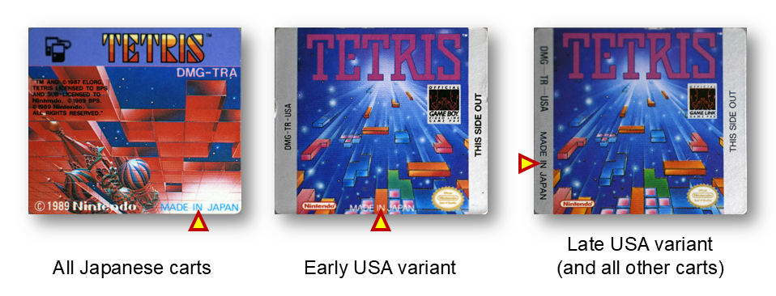
The Early variant has some sub-variants, most notably the three DMG-AAA PCB iterations:
- DMG-AAA-01: This is the earliest iteration that is mostly found on the Japanese 1.0
- DMG-AAA-02: This iteration only existed for a very short time
- DMG-AAA-03: This consits the majority of PCB iteration of this type
Global Packaging System Variant
| Code | GPS |
|---|---|
| Suspected Region(s) | Worldwide |
| Suspected Distributor(s) | Nintendo |
| Known variants | Late |
| Production dates |
Earliest: Latest: |
This one is a special variant with no specific localization.
Canadian Variants (CAN)
| Code | CAN |
|---|---|
| Suspected Region(s) | Canada |
| Suspected Distributor(s) | Nintendo |
| Known variants | Early, late, -1, -2 |
| Production dates |
Earliest: Latest: |
Like the USA, Canada has 4 distinct variants. They are packed with text because all is bilingual (English and French). The design of the player indicator looks very peculiar. The CAN-2 cart is special, since this design imitated the older designs with worse contrast. What led to this decision is not clear.
- Early variant
- Late variant
- CAN-1
- CAN-2
Europe
FRG (Federal Republic of Germany)
| Code | FRG |
|---|---|
| Suspected Region(s) | Western Germany, Switzerland, Austria |
| Suspected Distributor(s) |
|
| Known variants | Early, late, -1 |
| Production dates |
Earliest: Latest: |
Even though by the release of the game in Germany, the Berlin wall fell which separated East Germany (GDR, communistic) and West Germany (FDR, capitalistic). By the time of release, Germany was already united. The carts still had the localization FRG, which makes sense because the actions taken by Nintendo proceed October 1989. This is when the Berlin wall was torn down.
NOE (Nintendo of Europe)
| Code | NOE |
|---|---|
| Suspected Region(s) | United Germany, Switzerland, Austria |
| Suspected Distributor(s) | Various distributors in Germany, most importantly: Laguna |
| Known variants | Early, late, -1 |
| Production dates |
Earliest: Latest: |
NOE (Nintendo of Europe) was established as a subsidiary to Nintendo Worldwide??? in the newly united Germany, in 1990. Confusingly the label NOE, despite having Europe in its name, served primarily Germany and its neighboring (German-speaking) countries: Austria and Switzerland.
In 1993 subsidiaries to NOE were established: Netherlands (previous distributer there was Bandai), France, UK, Spain, Belgium and Australia. Despite it being geographically far away, Australia was likely added to the European market, because it was part of the 50Hz TV standard PAL. It therefore made sense to merge these markets under the subsidiary umbrella of NOE.
Check if the NOE subsidiaries are similar (well, not really… or are they?).
German Variants (NOE)
| Code | NOE |
|---|---|
| Suspected Region(s) | Germany |
| Suspected Distributor(s) | several distributors in Germany, but one of the most important is certainly Laguna |
| Known variants | early, late, -1 |
| Production dates |
Earliest: Latest: |
France and Holland Variants
| Code | FAH |
|---|---|
| Suspected Region(s) | France, Belgium, Luxembourg and Netherlands |
| Suspected Distributor(s) | BANDAI and Guillemot International, a division of Ubisoft |
| Known variants | Early, late |
| Production dates |
Earliest: Latest: |
United Kingdom Variants
| Code | UKV |
|---|---|
| Suspected Region(s) | United Kingdom and lreland |
| Suspected Distributor(s) | Several distributors, e.g. Bandai |
| Known variants | |
| Production dates |
Earliest: Latest: |
Italian Variants
| Code | ITA |
|---|---|
| Suspected Region(s) | ltaly |
| Suspected Distributor(s) | Mattel, GIG |
| Known variants | |
| Production dates |
Earliest: Latest: |
Scandinavian Variants
| Code | SCN |
|---|---|
| Suspected Region(s) | Sweden, Finland, Norway and Denmark |
| Suspected Distributor(s) | Bergsala |
| Known variants | Early, late, -1 |
| Production dates |
Earliest: Latest: |
Spanish Variants
| Code | ESP |
|---|---|
| Suspected Region(s) | Spain |
| Suspected Distributor(s) | Spaco and Erbe |
| Known variants | Late / Late-1 |
| Production dates |
Earliest: Latest: |
Spain has a very peculiar way to distinguish the ESP and the ESP-1 variant. There is literaly no difference between the 2 except for the added -1, which leads me to believe this was just a secon production lot and the -1 was misunderstood. It is also the only version where there are long dashes and a short dash for the -1: DMG—TR—ESP-1.
Europe Variants
| Code | EUR |
|---|---|
| Suspected Region(s) | Europe |
| Suspected Distributor(s) | large variety of distributors |
| Known variants | Late-type |
| Production dates |
Earliest: Latest: |
Asia-Pacific
South-East Asian Variant
| Code | ASI |
|---|---|
| Suspected Region(s) | Malaysia, Indonesia, Singapore |
| Suspected Distributor(s) | Uptron |
| Known variants | Late |
| Production dates |
Earliest: Latest: |
Hong-Kong Variant
| Code | HKG |
|---|---|
| Suspected Region(s) | Hong Kong (under British rule), Taiwan |
| Suspected Distributor(s) | |
| Known variants | Late |
| Production dates |
Earliest: Latest: |
Korean Variant
| Code | KOR |
|---|---|
| Suspected Region(s) | South Korea |
| Suspected Distributor(s) | Hyundai Electronics |
| Known variants | Late |
| Production dates |
Earliest: Latest: |
Australian Variant
| Code | AUS |
|---|---|
| Suspected Region(s) | Australia (New Zealand) |
| Suspected Distributor(s) | Mattel, Nintendo |
| Known variants | |
| Production dates |
Earliest: Latest: |
South America
Brazilian Variants
| Code | None |
|---|---|
| Suspected Region(s) | Brazil |
| Suspected Distributor(s) | Playtronic |
| Known variants | |
| Production dates |
Earliest: Latest: |
Mainland China and Other Chinese Markets
Mainland China Variants
| Code | CHN |
|---|---|
| Suspected Region(s) | Mainland China |
| Suspected Distributor(s) | Mani |
| Known variants | normal, FCO, 4-in-1, 4-in-1 (FCO), 4-in-1 usd |
| Production dates |
Earliest: Latest: |
Chinese carts (DMG-104CHN)
Chinese carts are also typically different in many ways. Their game identifier part of the code consists of numbers rather than letters - Tetris is "104" in china and "TR" in the rest of the world. They were produced in China instead of Japan. These are usually marked with a "Made in China" instead of the typical "Made in Japan".The manufactoring process was also different, the plastic as well as the PCBs are distinct - manufactored by MANI. The plastic of the Chinese carts is typically way more prone to yellowing and the carts have more issues being recognized during the boot process.
Chinese carts can come in 2 variants: for the international market and "For China Only" (FCO). FCO carts only contain chinese symbols and the other ones contain both Chinese and Latin symbols.
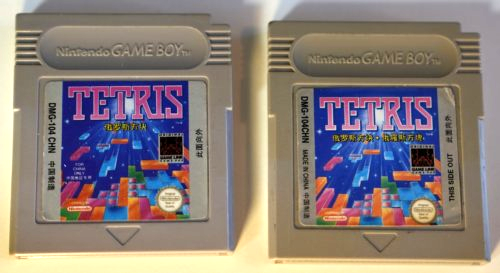
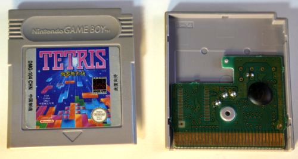
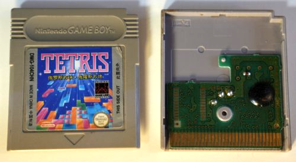
Chinese 4-in-1 (DMG-601CHN)
These carts are special. In China there is a collection of 4-in-1 carts, that each contain 4 games rather than just one. These are the only official carts that have more than one game on them.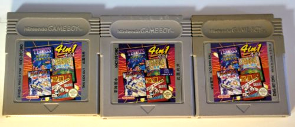
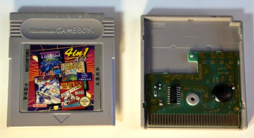
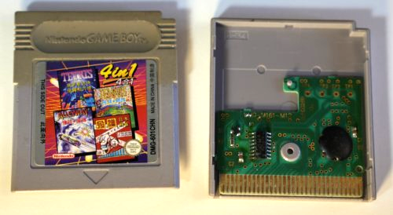
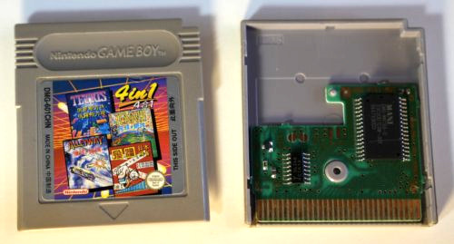
Region Of China (DMG-TR-ROC)
I would like to know more about the ROC cart, quite honestly. It also seems to be a chinese cart but follows the international standard with the letters and the artwork.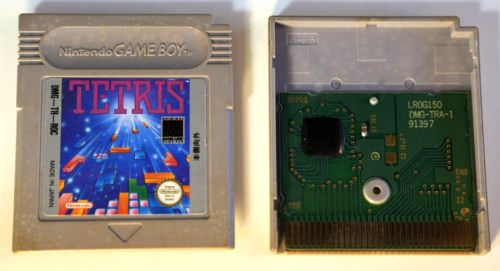
Hong Kong (DMG-TR-HGK)
Hong Kong was at the time under British rule and therefore follows the international, rather than the Chinese standard. These carts are Made in Japan.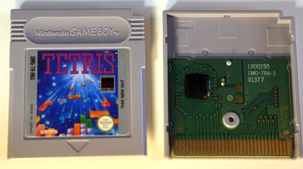
Korea (DMG-TR-KOR)
Korea too has a very interesting history concerning licensing agreements. A lot of consoles were sold differently using different manufacturers as in other countries. The Korean Game Boy for example differs a bit from the other Game Boys - it's sometimes called the KOMBOY.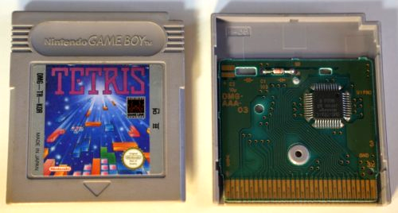
South-East Asia (DMG-TR-ASI)
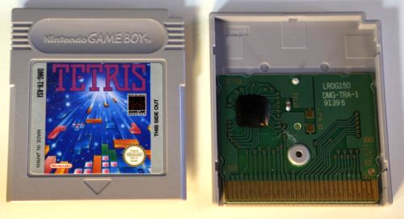
U.S.A Versions (DMG-TR-USA)
Canada and the USA are usually the only markets that use oval seal of quality rather than the round ones. There are some exception to this but it is in general a good indicator to find US and Canadian carts.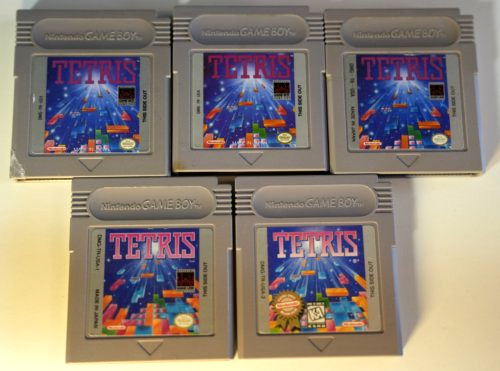
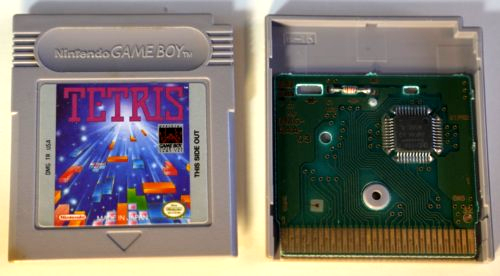
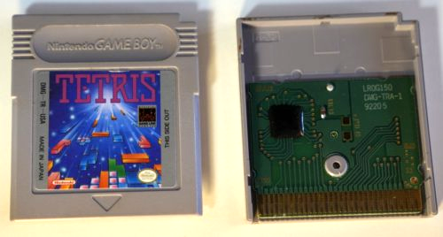
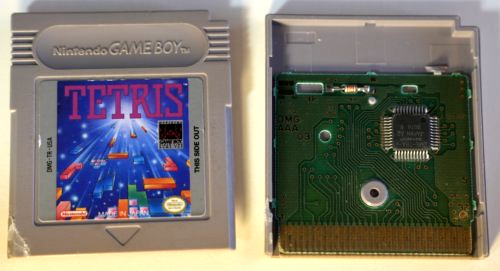
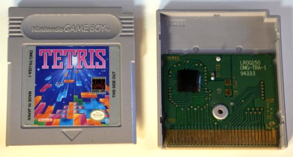
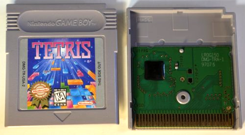
Canadian Versions (DMG-TR-CAN)
Canadian carts are also quite distinct. Since canada is partially English and partially French, both languages can be found on the labels.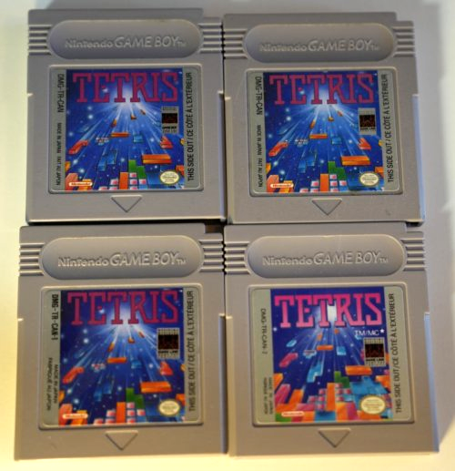
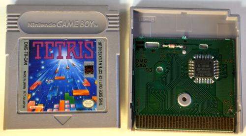
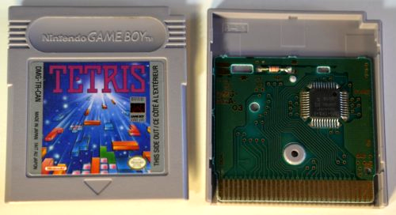
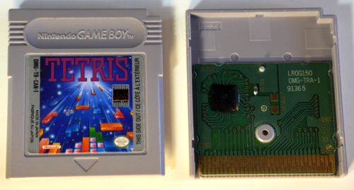
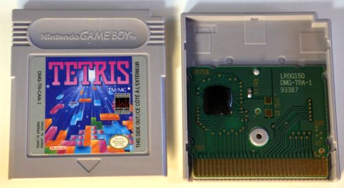
Australian Versions (DMG-TR-AUS)
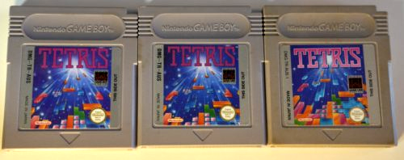
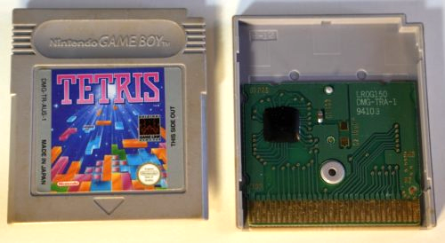
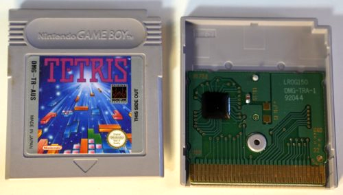
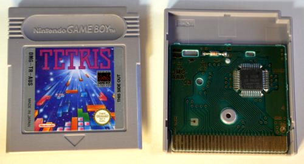
European Versions (DMG-TR-EUR and DMG-TR-NOE)
NOE stands for "Nintendo of Europe" and is situated in Germany where most NOE carts can be found.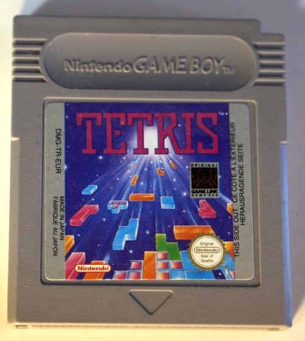
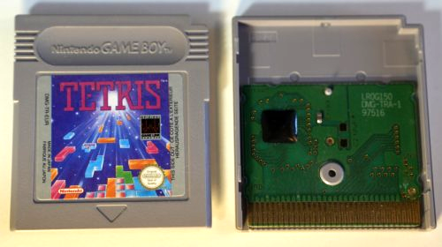
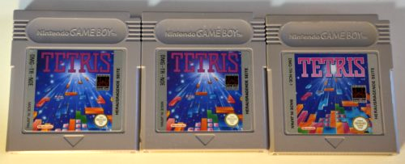
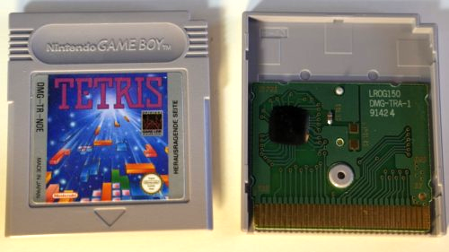
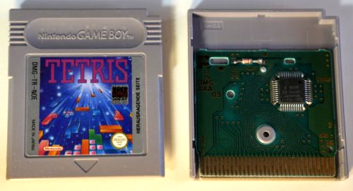
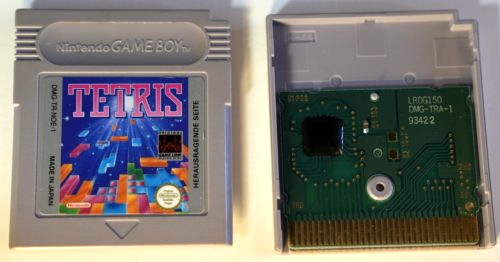
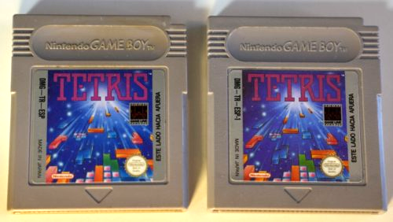
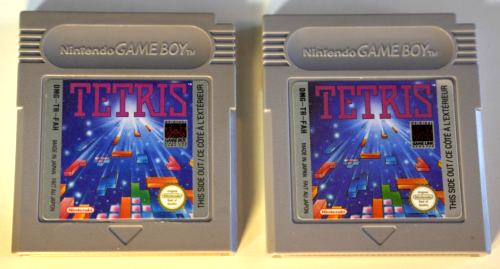
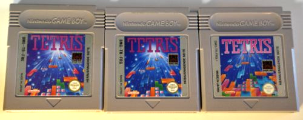
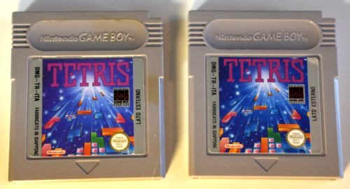
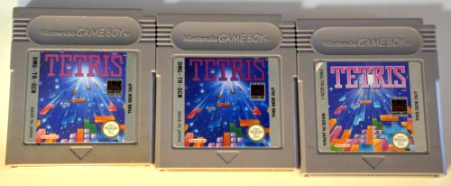
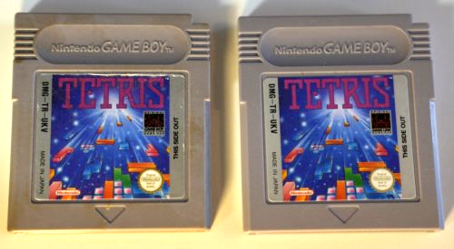
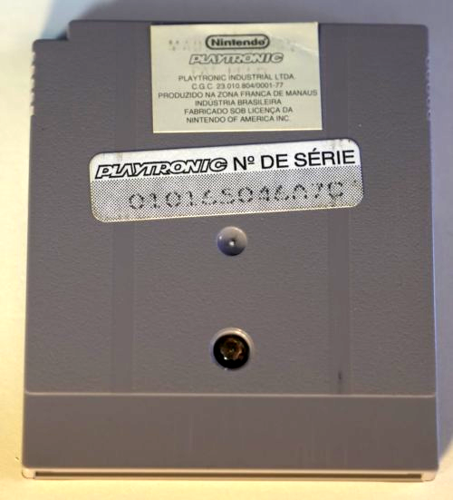
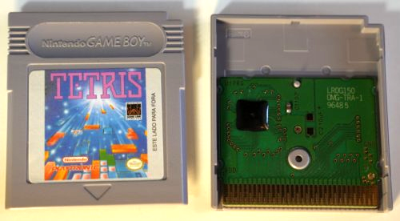
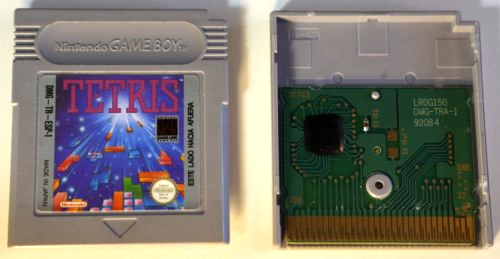
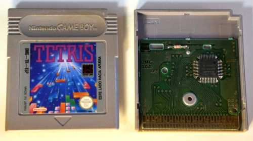
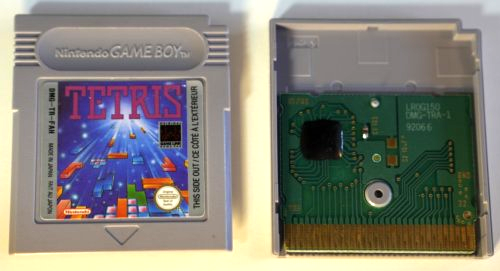
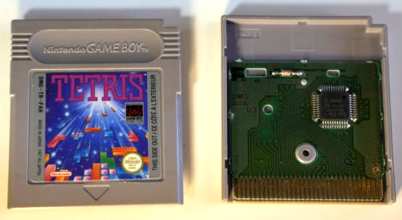
Sources: https://www.game-boy-database.com/gamefamily,1265,.html